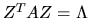
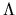
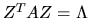
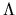

Next: Generalized Nonsymmetric Eigenproblems (GNEP)
Up: Generalized Eigenvalue and Singular
Previous: Generalized Eigenvalue and Singular
Contents
Index
Generalized Symmetric Definite Eigenproblems (GSEP)
Drivers are provided to compute all the eigenvalues and
(optionally) the eigenvectors of the following types of problems:
- 1.
-

- 2.
-

- 3.
-

where A and B are symmetric or Hermitian and B is positive definite.
For all these problems the eigenvalues  are real. The matrices Z
of computed eigenvectors satisfy

(problem types 1 and 3) or
Z-1 A Z-T = I
(problem type 2), where 
is a diagonal matrix with the eigenvalues
on the diagonal. Z also satisfies
ZT B Z = I (problem types 1 and 2) or
ZT B-1 Z = I (problem type 3).
are real. The matrices Z
of computed eigenvectors satisfy

(problem types 1 and 3) or
Z-1 A Z-T = I
(problem type 2), where 
is a diagonal matrix with the eigenvalues
on the diagonal. Z also satisfies
ZT B Z = I (problem types 1 and 2) or
ZT B-1 Z = I (problem type 3).
There are three types of driver routines for generalized symmetric and
Hermitian eigenproblems. Originally LAPACK had just the simple and expert
drivers described below, and the other one was added after an improved algorithm
was discovered.
- a simple driver (name ending -GV)
computes all the eigenvalues and (optionally) eigenvectors.
- an expert driver
(name ending -GVX) computes
all or a selected subset of the eigenvalues and (optionally) eigenvectors.
If few enough eigenvalues or eigenvectors are desired, the expert driver
is faster than the simple driver.
- a divide-and-conquer driver
(name ending -GVD) solves the
same problem as the simple driver. It is much faster than the simple
driver for large matrices, but uses more workspace. The name
divide-and-conquer refers to the underlying
algorithm (see sections 2.4.4 and 3.4.3).
Different driver routines are provided to take advantage of special
structure or storage of the matrices A and B, as shown in
Table 2.6.
Next: Generalized Nonsymmetric Eigenproblems (GNEP)
Up: Generalized Eigenvalue and Singular
Previous: Generalized Eigenvalue and Singular
Contents
Index
Susan Blackford
1999-10-01